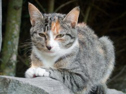

Работа с прикрепленными файлами - это одна из основных особенностей программы OutWiker. Все прикрепленные к заметке файлы хранятся в поддиректории __attach директории с заметкой. Чтобы прикрепить новые файлы, достаточно их скопировать в эту поддиректорию. Одной из целей, которая ставилась при разработке, это возможность вставки прикрепленных картинок в код страницы.
Working with attachments - this is one of the main features of the program OutWiker. All files which attached to note keep in __attach directory inside the note directory. Enough files copy in to __attache directory, that files attach. One of the goals, which was put into the design, it is possible to insert the attached images in the page code.
for example:

Для работы с прикрепленными файлами предусмотрена специальная панель. С ее помощью можно:
To work with attachments there is the special panel. By means of the panel you can: